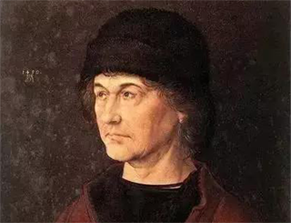
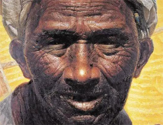
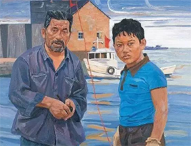

那些艺术家画过的爸爸
丢勒笔下的父亲
藏于意大利佛路伦萨菲兹美术馆。这件油画作品是丢勒为其首饰匠的父亲所作的肖像画。作者采用的是从侧面的角度入画，虽然是从侧面来描绘但不得不令人叹服其侧面描绘的脸庞竟能如此细腻真切，双手的描绘也相当细腻，色彩是协调的，戴著蓝色块的绿色背景，衬托衣服的棕色和皮肤和帽子的阴影，包括皮肤的颜色以及眼睫毛、头发的描绘等等，都在不影响最后效果的情况下，做到最细微的刻画。在这件作品中丢勒采用细腻写实主义手法，显示出其学画时期受到法兰德斯画风的影响。事实上，在这幅他习画后期所创作的画中，表现了他从父亲那学来的利落笔法，以及从米歇尔·沃格穆特老师那学来的勾画轮廓的笔法，以及法兰德斯画派艺术家汉‧斯布莱登沃夫勾画人性活动的画风。


罗中立笔下的父亲
20世纪80年代初，罗中立以一幅《父亲》震惊中国画坛，该作品以纪念碑式的宏伟构图，饱含深情地刻画出中国农民的典型形象，深深地打动了无数中国人的心。罗中立也由此被誉为20世纪80年代中国画坛的一面旗帜，该作品是“从艺术的天国向现实的复归”，是“中国社会和历史文化的一面镜子”。《父亲》中的这位纯朴的农人也许是作者对父亲及终年耕作土地的默默感恩。画家用浓厚的油彩，精微而细腻的笔触，塑造了一幅感情真挚、纯朴憨厚的父亲画面，即使没有斑斓夺目的华丽色彩，也没有激越荡漾的宏大场景，但作者依然刻画得严谨朴实，细而不腻，丰满润泽。背景运用土地原色呈现出的金黄，来加强画面的空间感，体现了《父亲》外在质朴美和内在的高尚美。颂歌般的画面色彩十分庄重，生动感人，是对生活中劳动者的崇敬和赞誉。
《脆弱小绳》1990年
创作于1990年的作品《脆弱小绳》属于刘小东毕业不久后的早期创作。也是在这一时期，刘小东逐渐成形了自己的图像样式，并在日后的艺术道路上，对已有的图像样式不断加以深化。画面中的一对平凡的父子被置于画面前景，凸显了他们犹如“平民英雄”的气质，也由此产生了一种召唤观众介入的效果。淳朴憨厚的中年渔民手中摆弄着烟斗，穿着一身蓝色的工作服和一双解放军胶鞋，这是过去新中国以来普通劳动人民的服饰标配，也是往往被赋予新时代主人翁精神的表征。接近成年的儿子戴着一副粗糙质感的劳动手套，粗壮的手臂、结实的大腿以及手臂上那抹彷佛刚刚结束劳动的灰尘，似乎是在向人们说明年轻力壮的少年即将成为祖辈世世代代赖以生存技能的继承者。
